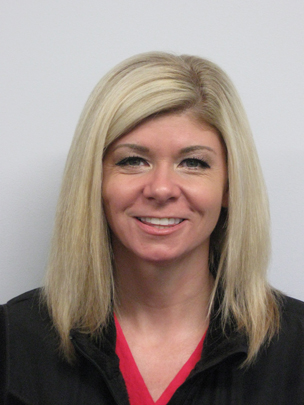
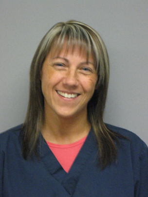

Dr. McVey is the Neurology Department's chief of service and board-certified neurologist and neurosurgeon. He has more than thirty years of experience as a veterinarian and in addition to his clinical duties, he serves as a professor for the College of Veterinary Medicine students. Dr. McVey is interested in both medical and surgical neurology and has professional associations with the Honor Society of Agriculture, AVMA, and ACVIM.
Dr. Arnold joined the Neurology team in August 2019 as a board-certified neurologist and neurosurgeon. She graduated from the School of Veterinary Medicine, University of Wisconsin-Madison in 2014. Dr. Arnold then completed a small animal rotating internship at the University of Minnesota in 2016. She recently completed a residency in neurology and neurosurgery at the University of Georgia. Dr. Arnold is particularly interested in canine neurosurgery and immunotherapy for brain tumors.

Amber joined the Neurology team in 2005. She has been a certified veterinary technician since 2001. In June 2011, she worked to obtain her Veterinary Technician Specialty (VTS) in Neurology, a rigorous application and exam documenting extensive knowledge of advanced competence in neurology. Amber is now one of nineteen technicians in the country who hold this specialized title.

Anna joined the Neurology team in 2003. She has been a certified veterinary technician since 1995. Anna also obtained her Veterinary Technician Specialty in Neurology in June 2011. The Neurology department is lucky to have two specialized technicians in their service.